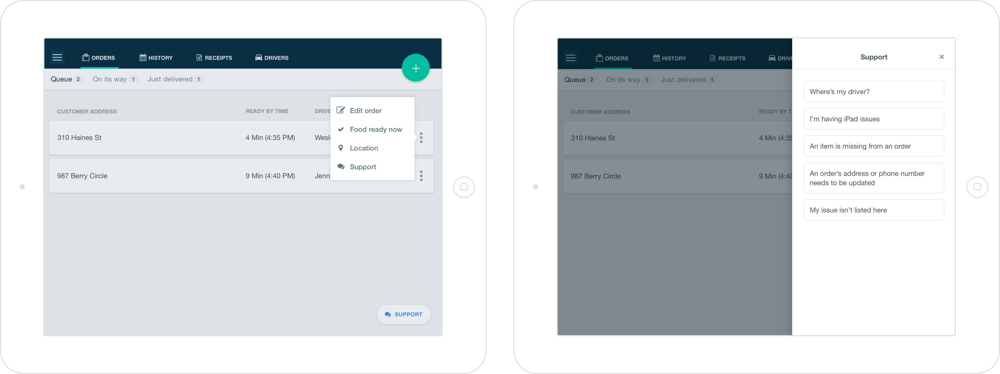
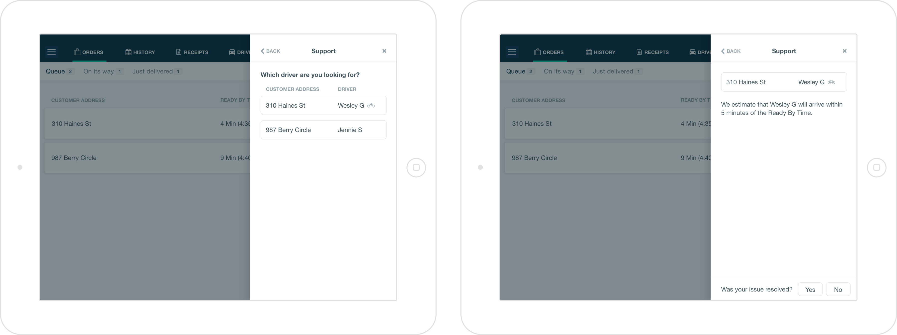
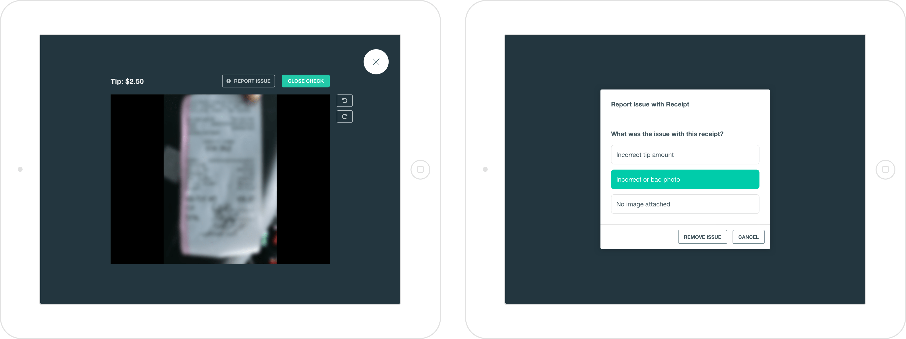
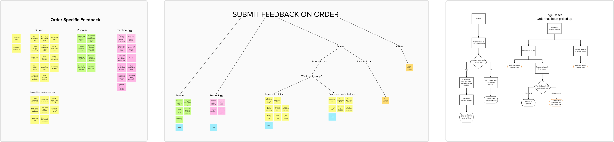
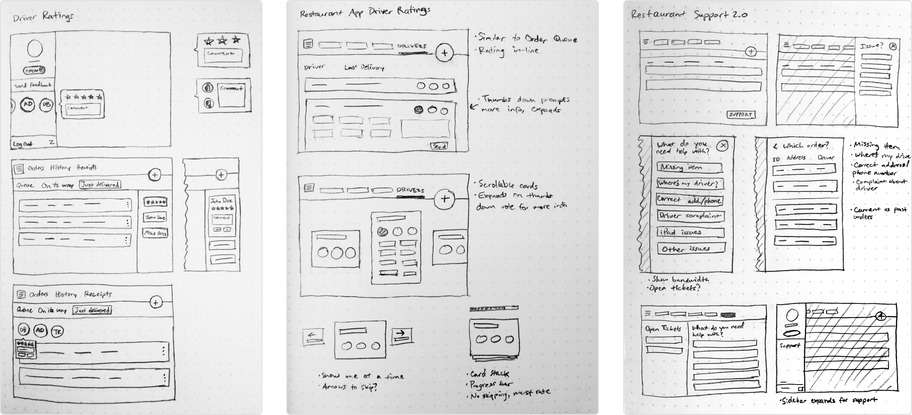
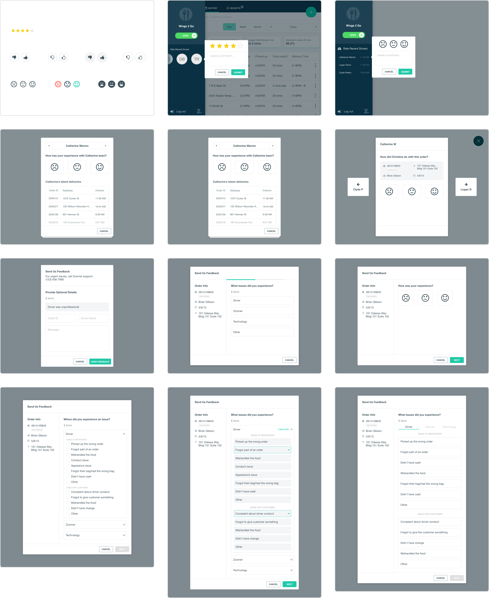
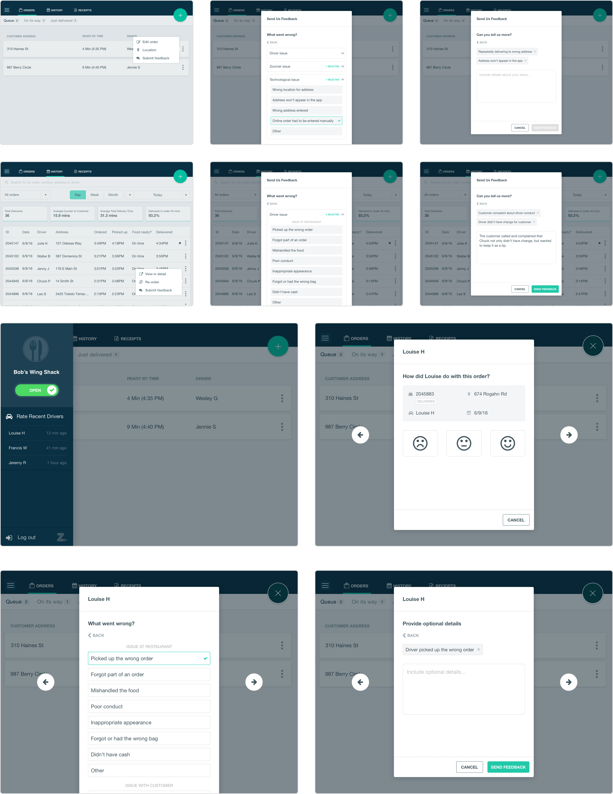

The challenge
Zoomer was growing rapidly as a restaurant food delivery service. To provide high-touch restaurant support, it was very manual early on—we taped a phone number to the tablets we provided, and then talked to whoever called us. While this gave us intimate qualitative feedback, as the business grew rapidly, so did restaurant support needs. This eventually reached a tipping point, where it began to bottleneck our growth.
We first needed feedback from restaurants to understand where we could improve the most. Then, we needed to scale our support to help restaurants help themselves.
Restaurant self-service support flow, which could be started from multiple paths. Download the InVision prototype if you’d like to click through yourself.
Our most common support need was, “where’s my driver?” Moving this in-product meaningfully reduced our support calls.
Demo of the driver feedback flow. We used this feature to identify issues and improve the quality of our service. Download the InVision prototype if you’d like to click through yourself.
The delivery workflow required drivers to take pictures of receipts, and then had restaurants confirm the tip amount. If there were issues with any photos, restaurants could file a support ticket directly within in the restaurant app.
Separating signal from noise
Our first task was to understand the scope of what we were trying to solve. Using our growing collection of restaurant support tickets to inform this process, we listed out the most common issues restaurants needed help with. We sorted the most actionable issues into groups that we built workflows from, then began ideating.
Affinity mapping to identify and group issues, and early workflows.
Early wireframe sketches.
Divergent, high-fidelity explorations of feedback and support flows in the restaurant app.
Learning from our users
We organized usability tests before we started building, to validate our assumptions with real restaurant customers. Staying true to scrappy startup culture, we went in the field and ran these tests inside our customer’s own restaurants, with whoever was willing. We tested prototypes of six different scenarios across the product journey.
Our biggest takeaway was our solution was too complex—we were trying to do too much in one place, and it overwhelmed our users.
A few scenarios we tested with our customers, from top to bottom: order level feedback from the Order Queue, order-level feedback from the Order History, and driver-level feedback from the side navigation.
Building for restaurants’ existing workflows
It was clear our feedback mechanisms and support flows didn’t align with actual tasks restaurants were trying to complete. To simplify, we separated the problems and designed contextual solutions throughout the app. This resulted in three distinct flows:
- General, and often time-sensitive restaurant support within the main order management workflow
- Driver-specific feedback after deliveries were completed, usually during downtime
- Receipt issue reporting from the order history, often done at the end of the day, when closing down the restaurant
Phased release
The complete self-service support flow involved quite a bit of engineering effort. To ship an MVP quickly, we reduced scope into smaller chunks, addressing the most urgent issues first while setting a product foundation to build on top of. The full version was built out in a subsequent release a few months later.
Demo of the MVP contact support flow.
Reflections
I’m proud of the solution we built, but I think it took too long to get from ideating to shipping a solution. We started out with a very murky, abstract problem, and it was hard to figure out what we needed to build. We defined the problem well at the macro level, but we spent too much time trying to clump all of the different scenarios into an all-in-one solution. Building a great product requires understanding when to pair features together, when to split them apart, and most importantly, when to say “no”.
Knowing what I know now, I would have talked to our customers even sooner, to reduce the amount of time spent churning on ideas. We took a refined prototype to them and asked, “does this work?” While this is great, what we missed was also going to them while we were still defining the problem, and asking, “how do you solve these problems today?” We had great data, but we used it as a crutch, and missed the story behind it. Once we really understood our customers’ problems, it became much more clear how to ship features incrementally.
Streamlining customer support is also a tricky issue. Customers want a hands-on, personalized approach, but businesses need to find a way to scale that in a sustainable way. It makes maintaining quality a challenge. Since we were confident in our data, and had a great understanding of the scope of our logistics, I think we balanced this very well. We automated the things that were “obvious” and didn’t need hands-on support, and kept the more challenging issues high-touch. The results speak for this—we were able enter new markets and massively scale our order volume, while maintaining the size of our support team and keeping high customer satisfaction scores.